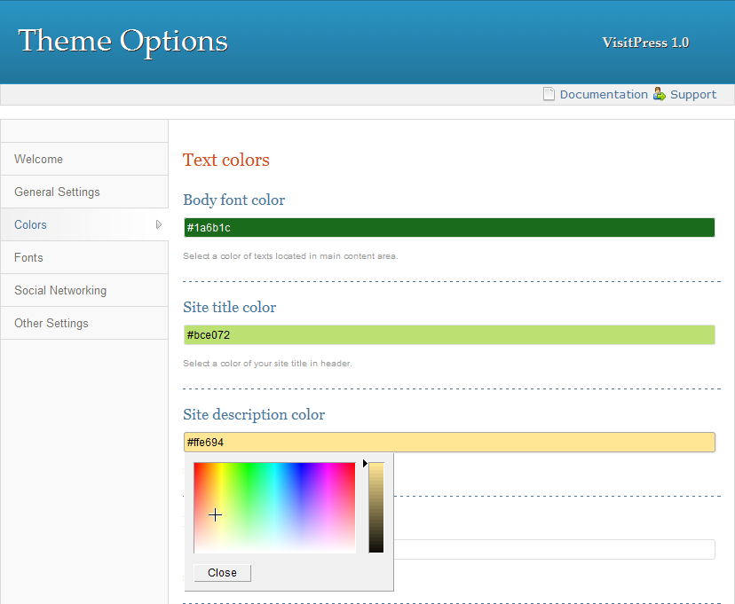
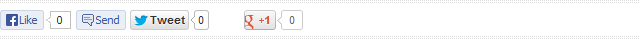

VisitPress 1.0 Documentation by Tomas Toman
VisitPress
Created: 02/09/2013
By: Tomas Toman
Web: visitpress.tomastoman.cz
First of all, I would like to thank you for choosing VisitPress! I firmly believe that you will be satisfied with the product. In case of any problems or doubts you can use the VisitPress Official Support (in English, German or Czech).
Thanks so much!
Navigation
- About VisitPress
- Theme installation
- Theme options
- General settings
- Colors (only in Premium Version available)
- Fonts
- Social networking (only in Premium Version available)
- Other settings
- Header and footer background color
- Widget areas
- Custom widgets (only in Premium Version available)
- Menu areas
- Page templates
- Sitemap page (only in Premium Version available)
- Page without comments
- Plugins
- Slideshow plugin
- Sitemap plugin (only in Premium Version available)
- Breadcrumb navigation plugin
- Translations
- FAQs about WordPress
A) About VisitPress - top
Have you ever been in Tuscany? Do you like Paris? Have you ever visited Amsterdam? With VisitPress, you can explore all these places. Missing here your favorite places? Never mind! You can easily create your own color schemes to suit your favorite locations. Of course, you can use VisitPress for any other purpose than traveling, too! :-)
VisitPress is an easy customizable WordPress blog theme. It is a fully responsive theme that allows for easy viewing on any device.
VisitPress Features
- Responzive design
- Intuitive Theme Options panel
- 5 pre-defined color schemes (green-orange "Tuscany", red-orange "Amsterdam", brown-green "Bern", blue-gray "Iceland" and blue-rose "Paris")
- Unlimited ability to create custom color schemes
- Select between viewing with or without right sidebar
- Integrated Cyclone Slider for displaying Image/Youtube/Custom HTML slideshows
- Selection from 210 Google fonts for individual headlines and text passages
- 2 menu areas (horizontal and vertical)
- Horizontal menu with unlimited levels of drop-down submenus
- Sidebar and Footer widget areas
- Social networking Custom widget
- Twitter Following Custom widget
- Integrated Facebook/Twitter/Google +1 sharing buttons
- Custom widget for displaying Home/Contact/Sitemap links in header
- Integrated automatic Sitemap generator with advanced options
- Integrated Breadcrumb navigation with advanced options
- Easily add your own favicon
- Options for single posts/pages displaying
- Easily add custom CSS
- Ready for translation into your language (.pot file integrated)
- Integrated Czech, French, German, Hungarian and Slovak language localization
Compatible Browsers: Internet Explorer 8+, Google Chrome, Mozilla Firefox, Opera, Safari
Compatible WordPress Versions: 3.4, 3.4.1, 3.4.2, 3.5, 3.5.1, 3.5.2, 3.6, 3.6.1, 3.7
B) Theme installation - top
For VisitPress installation, you must follow these basic steps:
- Extract the folder "visitpress.zip".
- Using FTP client (for example Total Commander) upload the extracted folder "visitpress" to "wp-content/themes" directory on your host web server.
- Log in to your WordPress administration.
- Select the "Appearance => Themes" panel.
- Click on the link "Activate" at the VisitPress theme.
1. Update to Premium Version
Once you have purchased VisitPress Premium Version, simply delete the "visitpress" folder in "wp-content/themes" directory on your host web server and replace it by folder that you have got by purchasing VisitPress Premium Version.
C) Theme options - top
The options framework is available through the link "Theme Options" located on the upper horizontal admin bar (or via panel "Appearance => Theme Options").
1. General settings
This tab is used for choosing one of the basic color schemes and setting to display or not the main parts of layout (right sidebar, favicon, homepage headline, breadcrumb and post navigation). You can find here the single posts/pages displaying options, too. You can set if you want to display the featured images, dates, categories and authors on individual posts and pages.
2. Colors
This tab is used for setting your own color scheme. You can here choose the colors of individual parts of layout, headlines and texts. Using color pickers, you can easily choose exactly that color you want. You can also directly enter the hexadecimal code of your favorite color.
Tip: If you want to set the color gradient for search box and scroll top box, first select the darkest color of the gradient. Then copy its hexadecimal code and paste it into the field for middle color. Using arrow on the right choose the lighter shade of that color. Repeat this procedure for choosing the lightest color shade of gradient.
Color settings panel
Note: The main background color of header and footer is set on panel "Appearance => Background".
3. Fonts
This tab is used for selecting Google fonts for individual headlines and text areas. VisitPress offers more than 200 fonts for choosing. The default fonts are specified in the main stylesheet file (style.css in the main theme folder).
4. Social networking
On this tab, you can choose wheter to display or not the Facebook, Twitter and Google +1 sharing buttons which may appear below your single posts/pages content.
Social networking panel
5. Other settings
On this tab, you can fill your own cascading style sheet information (CSS) for modifying the layout. So you do not have to write your custom CSS straight into the file style.css in the main theme folder. The CSS information defined on this tab appear in the "head" section of source code.
Above the Custom CSS field, there are also links for editing widgets, menus and main background color.
6. Header and footer background color
The main (header and footer) background color is not set on the "Color" tab of Theme Options. This adjustment is located in panel "Appearance => Background" where you can use the color picker in section "Display Options" to define the exact shade.
In section "Background Image", you can upload your own pattern or image for displaying in the background of header and footer.
D) Widget areas - top
There are several areas for displaying widgets in VisitPress Theme:
- Sidebar widget area
- Footer widget area
- Footer copyright notices
- Home page slideshow
- Header icons (only in Premium Version available)

VisitPress Widget areas
The Widget panel is located in "Appearance => Widgets" section. If you want to place a widget in some of that areas, simply drag its panel and drop it to the area where you want to display the widget.
1. Sidebar widget area
Sidebar widget area displays in the right sidebar, below the Sidebar navigation. Its name in "Appearance => Widgets" panel is "Main Sidebar". You can put here as many widgets as you want.
2. Footer widget area
Footer widget area displays in the footer as the darker box of 3 widgets. In "Appearance => Widgets" panel, you can see 3 areas for individual widgets: "Footer left widget", "Footer middle widget" and "Footer right widget". This boxes represent those 3 widgets. It is recommended to put only one widget into each of those 3 areas.
3. Footer copyright notices
The widget area for copyright and other notices displays in the footer, below the main Footer widget area (described above). Its name in "Appearance => Widgets" panel is "Footer notices". Put here one "Text" widget. Into the content field of this widget fill the text (or HTML code) you want to display here. The "Title" field of this Text widget must remain empty.
4. Home page slideshow
The widget area for displaying Home page slideshow is reserved for one "Cyclone Slider Widget". Its name in "Appearance => Widgets" panel is "Home page slideshow". Put here one "Cyclone Slider Widget" and choose the slideshow you want to display on your home page.
5. Header icons
The widget area for displaying Home/Contact/Sitemap links icons in header is reserved for one "VisitPress Header Bar Widget". Its name in "Appearance => Widgets" panel is "Header icons". Put here one "VisitPress Header Bar Widget" and fill the requested URL addresses. Into the field for Contact, you can put URL address of your contact page or your contact e-mail. If you want to insert an e-mail, please add the prefix "mailto:" before that e-mail address.
E) Custom widgets - top
VisitPress Theme offers 3 custom widgets:
- VisitPress Header Bar Widget
- VisitPress Social Widget
- VisitPress Twitter Widget
1. VisitPress Header Bar Widget
This widget is ready to use for displaying Home/Contact/Sitemap links icons in header. If you want to display these icons, simply put VisitPress Header Bar Widget into "Header icons" area in "Appearance => Widgets" panel and fill requested URL addresses.
2. VisitPress Social Widget
This widget is ready to use for displaying icons with links to your profiles on social networks and RSS feed. Put VisitPress Social Widget into Sidebar or Footer widget area in "Appearance => Widgets" panel and fill requested URL addresses. These social networks and services are supported:
- Google+
- Youtube
- Delicious
- Flickr
- RSS
3. VisitPress Twitter Bar Widget
This widget is ready to use for displaying Twitter Follow button. Put VisitPress Twitter Widget into Sidebar or Footer widget area in "Appearance => Widgets" panel and fill the Twitter username you want to display via Twitter Follow button.
F) Menu areas - top
In VisitPress Theme, there are 2 areas for displaying menus:
- Horizontal header menu with unlimited levels of drop-down submenus
- Vertical sidebar menu
Menu settings panel is located in "Appearance => Menus". At first create a new menu and assign it to one of two predefined Menu areas. Then in left panels choose required pages/categories or custom links and add them to your new Menu. Then save all changes.
If you want to create a submenu, just drag required menu item and move it more to the right against its parent item. When you drop your sub-item, it should stay with indentation against the parent item. This way you can create unlimited levels of submenus.

Example of three-levels menu
G) Page templates - top
Beside Default Template, VisitPress offers 2 other custom Page templates. If you create a new page or edit some existing page, you can choose the Page template in "Page Attributes => Template" right panel.
1. Sitemap page
"Sitemap" Page template is ready for displaying a sitemap page. If you want to use it, the Dagon Design Sitemap Generator plugin must be activated. The sitemap options can be edited on "Settings => DDSitemapGen" panel.
2. Page without comments
If you want to have only some pages with the possibility to add comments and you don't want to deal with it using "Settings => Discussion" panel, just use the "without-comments" Page template. Pages using the Default template will be ready for adding comments and pages using "without-comments" Template won't display the comment form.
H) Plugins - top
Some functions of VisitPress are conditioned by installing some plugins. The recommended plugins are included in the installation folder of VisitPress (folder "plugins"). If some of the recommended plugins are inactive, you can see them in "Appearance => Install Plugins" panel.
List of recommended plugins:
- Slideshow plugin - Cyclone Slider 2 by Nico Amarilla
- Sitemap plugin - Dagon Design Sitemap Generator by Dagon Design
- Breadcrumb navigation plugin - Breadcrumb NavXT by John Havlik
The plugins are modified to ensure the best compatibility with VisitPress. If you will find their newer versions on web, I don't recommend to update them, because all custom modifications will be lost. Plugins updates will come automatic with newer versions of VisitPress.
1. Slideshow plugin
Slideshows are based on Cyclone Slider 2 plugin. You can edit them under "Cyclone Slider" tab in the main WordPress navigation. The plugin provides displaying images, Youtube or Vimeo videos and Custom HTML content in Slideshow. The control is very easy and intuitive. On the right panels of Slideshow editing form, you can set dimensions, transitions effects and other options. Above these panels are generated Shortcodes for simply adding your slideshows into the posts or pages.
If you want to add some Slideshow to top of index page using "Cyclone Slider Widget", please read this paragraph.
2. Sitemap plugin
If you want to use the "sitemap" Page template, the Dagon Design Sitemap Generator plugin has to be installed and activated. This plugin provides many advanced options for displaying pages and posts in sitemap. You can set them on "Settings => DDSitemapGen" panel.
3. Breadcrumb navigation plugin
If you want to display breadcrumb navigation above the main content headlines, the Breadcrumb NavXT plugin has to be installed and activated. This plugin provides many advanced options for displaying breadcrumb navigation. You can set them on "Settings => Breadcrumb NavXT" panel.
I) Translations - top
VisitPress theme is ready for translation into any language. The .pot file (visitpress.pot) is located in "visitpress/languages" theme folder. VisitPress contains integrated Czech (cs_CZ) language localization. The best way how to make the language localization is creating your own .po and .mo files and adding them in "visitpress/languages" theme folder. If you will create them, please let me know, I will add your language localization into the official theme distribution.
If you don't know how to create the .po and .mo files, never mind! Simply install CodeStyling Localization plugin and create your language localization on "Tools => Localization" panel.
J) FAQs about WordPress - top
1.) Where could I edit my website title and description?
Go to the "Settings => General" panel and rewrite here the fields "Site Title" and "Tagline".
2.) Where could I allow/disallow comments adding?
Go to the "Settings => Discussion" panel and set the options according to your needs.
3.) What are the "Tags"?
Tags are similar to Categories. They are used for better description of posts. We can say that Tags are the keywords which specify the posts in great detail.
4.) How could I set title, description and keywords meta tags for each page and post?
The easiest way is to install some SEO plugin, for example All In One SEO Pack.
5.) Where could I set the number of posts, which display on index/categories/archives/search pages?
Go to the "Settings => Reading" panel and set the options according to your needs.
6.) I dont want to display the latest posts on my home page. Could I set a static page as my home page?
Yes, go to the "Settings => Reading" panel and choose the option "A static page" instead of "Your latest posts".
7.) How could I set the URL addresses of my pages and posts into user-friendly form, instead of "?p=123" displaying?
Go to the "Settings => Permalinks" panel and choose the option "Post name" in section "Common Settings".
8.) Where could I set my time zone and date/time format?
Go to the "Settings => General" panel and set the options according to your needs.
Once again, thank you so much for choosing this theme. As I said at the beginning, I'd be glad to help you if you have any questions relating to this theme. No guarantees, but I'll do my best to assist. Best regards and have fun with VisitPress!
Tomas Toman